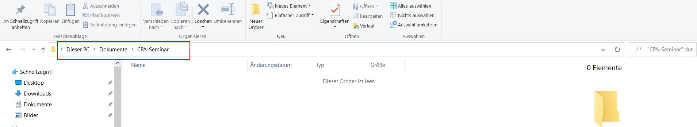
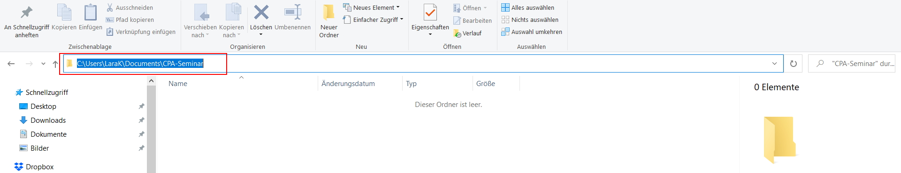
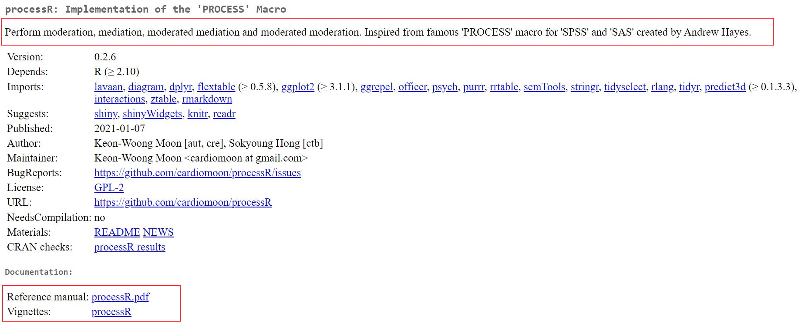
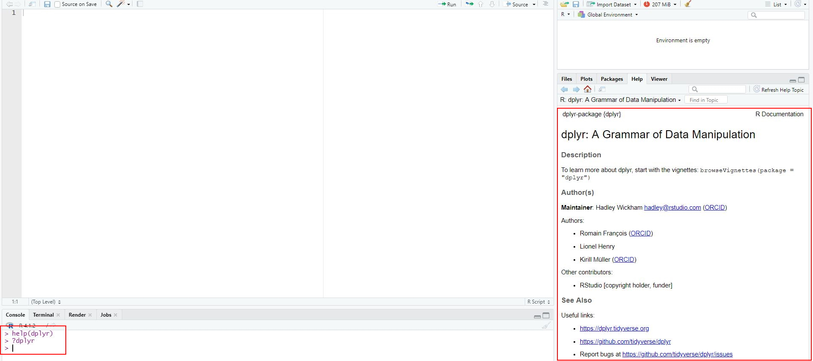
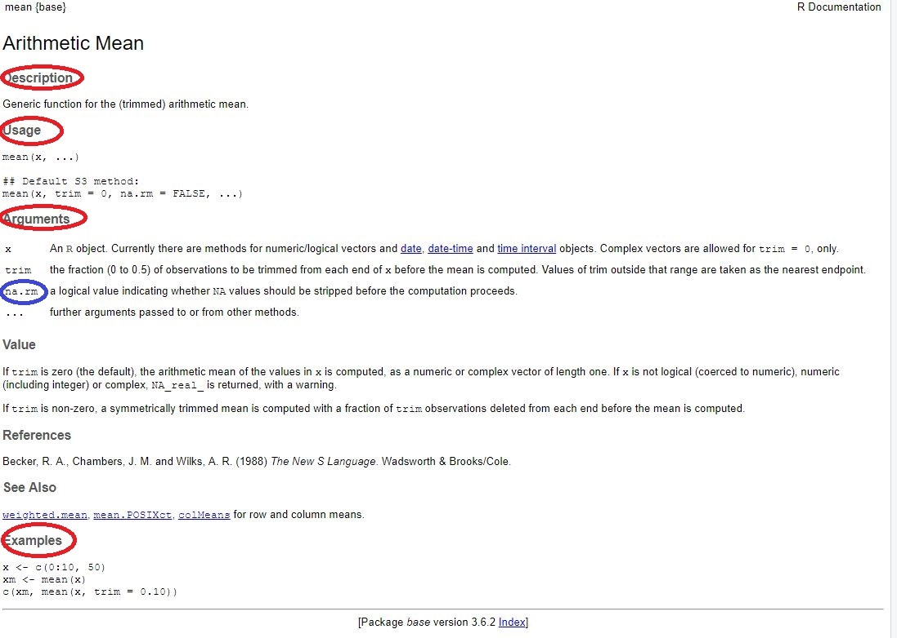
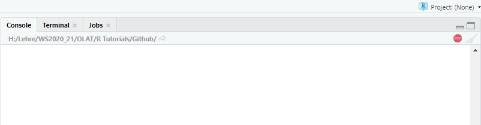
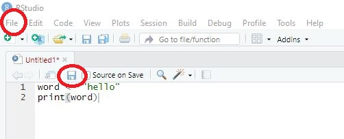
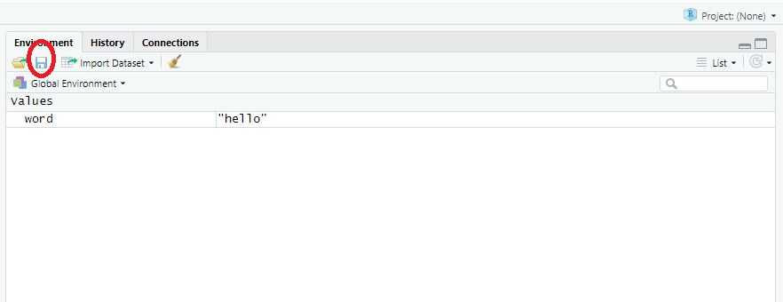

2 Tutorial: Workflow in R
Tutorial 2 will not yet deal with how to write code and do your own analyses in R (don’t worry, we’ll get there soon!).
Before you write your own code, you should understand the basic workflow when working with R and R Studio - independent of whether you want to calculate a regression model, do an automated content analysis, or visualize results of an analysis.
After working through Tutorial 2, you’ll…
- understand the basic work flow in R.
2.1 Defining your working directory
The first step of any type of analysis is to define your working directory. You may wonder: What’s that?
Your working directory is the folder from which data can be imported into R or to which you can export and save data created with R.
Create a folder that you want to use as your working directory for this tutorial (or use an existing one, that also works). Go to that folder and copy the path to it:
| Image: Working Directory |
|  |
| Image: Copy Working Directory |
|  |
Now you know where this working directory is located - but R should know, too! Telling R from which folder to import data or where to export data to is also called setting your working directory. We call a function called setwd() (you guessed right: short for “setting you working directory”) which allows us to do exactly that.
Important: The way this working directory is set differs between Windows- and Mac-Operating Systems.
Windows: The dashes need to be pointing towards the right direction (if you simply copy the path to the folder, you may need to replace these signs “\” with “/”)
setwd("C:/Users/LaraK/Documents/CPA-Seminar")Mac: You may need to add a “/” at the beginning like so:
setwd("/Users/LaraK/Documents/CPA-Seminar")If you have forgotten where you set your working directory, you can also ask R about the path of your current working directory with getwd():
getwd()## [1] "C:/Users/LaraK/Documents/CPA-Seminar"2.2 Packages
I’ve been talking about packages before: While Base R, i.e., the standard version of R, already includes many helpful functions, you may at times need other, additional functions. For instance, in the case of conditional process analysis - the method, we’ll focus on in this seminar - we’ll need to use specific packages including additional functions.
Packages are collections of topic-specific functions that extend the functions implemented in Base R.
In the spirit of “open science”, anyone can write and publish these additional functions and related packages and anyone can also access the code used to do so.
You’ll find a list of all of R packages here. In this seminar, we’ll for instance use packages like ProcessR or lavaan for conditional process analysis.
2.2.1 Installing packages
To use a package, you have to install it first. Let’s say you’re interested in using the package ProcessR. Using the command install.packages(), you can install the package on your computer. You’ll have to give the function the name of the package you are interested in installing.
install.packages("processR")Now the package has been installed on your computer and is accessible locally. We only have to use install.packages() for any package once. Afterwards, the only thing you’ll have to do after open R is to activate the already installed package - which we’ll learn next.
2.2.2 Activating packages
Before we are able to use a package, we need to activate it in each session. Thus, you should not only define a working directory at the beginning of each session but also activate the packages you want to use via the library()_ command. Again, you’ll have to give R the name of the package you want to activate:
library("processR")Else, you can also use the name of the package followed by two colons :: to activate a package directly before calling one of its function. For instance, I do not need use to activate the ProcessR package (by using the library() function) to use the function meanCentering() if I use the following code:
processR::meanCentering()2.2.3 Getting information about packages
The package is installed and activated - but how can we use it? To get an overview of functions included in a given package, you can consult its corresponding “reference manual” (overview document containing all of a package’s functions) or, if available, its “vignette” (tutorials on how to use selected functions for the corresponding package) provided by a package’s author on a website called “CRAN”.
The easiest way to finding these manuals/vignettes is Google: Simply google CRAN ProcessR, for instance, and you’ll be guided to the following website:
| Image: Cran Overview ProcessR package |
|  |
The first paragraph (circled in red) gives you an overview of aspects for which this package may be useful. The second red-circled area links to the reference manual and the vignette. You can, for instance, check out the reference manual to get an idea of the many functions the processR package contains.
Another way of getting there is to simply use the help()-function provided by R, which we’ll get to now.
2.3 Help?!
The one thing you can count on in this seminar is that many things will not work right away: You’ll forget commands or what to use them for, the name of packages you need, or be confronted with errors messages that you need to understand to fix a given problem. This happens to anyone: from beginners to those having worked with R for many years. In this case, you need: help().
2.3.1 Finding information about packages
If you have a package installed and you’re interested in this specific package, you can also use R and the help() function (or simply use ?, which leads to the same result):
help(dplyr) #Version 1 of asking for help
?dplyr #Version 2 of asking for helpIn turn, you’ll get more information via the window “Help”:
| Image: Overview for the dplyr package |
|  |
2.3.2 Finding information about functions
Oftentimes, you need help with a specific function.
I’ll give you an example: Let’s say I teach a seminar with 10 students. I have asked all of them about their age. I have now saved their answers (i.e., 10 different numbers) in an object called age. This object is a vector, i.e. an object that consists of several values of the same data type - we’ll get to this in Tutorial: Objects & structures in R.
age <- c(23, 26, 19, 28, 24, 22, 21, 27, 24, 24)Now we want R to compute the mean age of students in the seminar using the mean() function. We thus ask R to compute the mean of the vector age like so: We call the function mean(). We specify all necessary conditions to run it - here that x = age, i.e. that R should compute the mean of all values in the vector age:
mean(x = age)## [1] 23.8That looks good - R tells us that the mean age of our students is 23.8 years. Let’s say I did the same thing for a different seminar: I also asked students about their age. while most chose to answer, some refused to answer. Thus, I recorded missing answers as NA (NA is used to record missing values, short for “not available”).
age <- c(23, 26, NA, 28, 24, 22, 21, NA, 24, NA)
mean(x = age)## [1] NAHowever, when trying to get the students’ mean age, R tells us that the mean is NA (i.e., missing). But do we really only have missing values? Let’s inspect our data again:
age## [1] 23 26 NA 28 24 22 21 NA 24 NAThat’s not true: 7 out of 10 students told us their age; only 3 refused to answer (here recorded as NA). So why does R tell us that the overall mean is missing - shouldn’t the function simply ignore NAs and tells us the mean age of all of those 7 students who answered our question?
To do some troubleshooting, we use the help() function. We specify for which function we need help:
?meanThis is where our fourth window comes into place as results for our search for help are depicted here (the paragraph depicted here is the reference manual including information on the mean() function).
| Image: Help for error with mean()-function |
|  |
It includes important information on the function (of which we’ll discuss only some, namely those circled in red):
- Description: explains for which types of tasks the function mean() should be used
- Usage: explains how the function mean() should be used
- Arguments: explains which elements need to be or can be defined for using mean() and how these elements need to be specified
- Examples: exemplifies how the function mean() can be used
When inspecting the section “Arguments”, we’ll soon discover something very important: mean() is a function that needs an object x for which the mean should be calculated. In this case, we specified x to consist of the vector age by typing x = age.
mean(x = age)Upon further inspection, however, we see something else: The mean() function needs more information. In particular, we have to specify how R should deal with missing values, here NAs (see the section circled in red). This wasn’t a problem in the first example (since we had no NAs), but seems to be a problem for the second example. The manual reads as follows:
- “na.rm: a logical value indicating whether NA values should be stripped before the computation proceeds”.
This indicates that if our x contains any NAs, we need to tell R and the mean() function how to deal with these. We haven’t specified this yet, which is why R includes all missing values for calculation and thus tells us that - given that some values are missing - the mean is missing. If we want R to ignore all NAs, we need to actively set na.rm (short for removal of NAs) to TRUE. This tells R that the mean should be computed for all of those values for x that are not missing.
The following command therefore gives us the mean age of all those students who chose to answer the question:
mean(age, na.rm = TRUE)## [1] 242.3.3 Searching for help online
For some questions, using the help()-function won’t cut it. In this case, Google is your new best friend.
I’ve almost never encountered a problem that others haven’t had and asked for answers online (and usually received a helpful response).
When googling, look out for the following websites that often offer help for statistical/programming issues:
2.3.3.1 Make sure to use relevant search terms
When googling, make sure to use all relevant search terms. This includes at least:
- parts of the error message you are receiving or descriptions of the error
- the search term “R” (there are a lot of other programming languages and you should make sure that your answers are tailored to R)
- the function throwing the error
Let’s say you are trying to find out how to set your working directory since your R throws the following error: “cannot find directory”. Googling for help via search terms such as “directory programming define” will likely lead to insufficient results because: (a) the specific command you are having trouble with is missing, (b) the specific error message you are getting is missing, (c) the search request does not specify that you need answers for the programming language R.
A better way to go around this would be something like: “setwd() R error message cannot find directory”: (a) you are specifying the command that gives you trouble, (b) you are specifying the error message, and (c) you are specifying that you want answers for R.
2.3.3.2 Don’t trust every result you get
While most Google searches will get you a multitude of different answers for your questions, not all of them are necessarily right for your specific problem. Moreover, there may be different solutions for the same problem - so don’t be confused when people are proposing different approaches. Contrary to common conception, the internet is not always right - you may also get answers that are wrong or inefficient. Its often best to scroll through some search results and then try the solution that seems most understandable and/or suitable for you.
2.3.3.3 Make your problem reproducible
It is often vital that others can reproduce your problem: Others need to see which lines of codes exactly created an error message, what the error message looked liked, which data you used, and on which type of machine/system you ran the analysis to help.
For instance: Nobody is likely going to be able to help you with a request like this
"If I try to set my working directory, my computer tells me that I can't (the error says: Error: unpexted input in setwd(C:\. What is the problem?"This isn’t great because no one knows the code that created the problem or the machine/system you used. Thus, you need to make your error replicable by giving the exact command and potentially information about your machine via sessionInfo():
"I am trying to set my working directory on a Windows System using the following code:
setwd(C:\Users\LaraK\Documents\CPA-Seminar)
While the path to the folder that I want to be my working directory is definitely correct, R gives me the following error message:
Error: unpexted input in setwd(C:\."sessionInfo()## R version 4.1.2 (2021-11-01)
## Platform: x86_64-w64-mingw32/x64 (64-bit)
## Running under: Windows 10 x64 (build 19044)
##
## Matrix products: default
##
## locale:
## [1] LC_COLLATE=English_United States.1252 LC_CTYPE=English_United States.1252 LC_MONETARY=English_United States.1252 LC_NUMERIC=C
## [5] LC_TIME=English_United States.1252
##
## attached base packages:
## [1] stats graphics grDevices utils datasets methods base
##
## other attached packages:
## [1] interactions_1.1.5 ggpubr_0.4.0 extrafont_0.17 bookdown_0.24 rsconnect_0.8.25 nonnest2_0.5-5 insight_0.16.0 performance_0.8.0 lavaanPlot_0.6.2
## [10] processR_0.2.6 lavaan_0.6-11 forcats_0.5.1 stringr_1.4.0 dplyr_1.0.8 purrr_0.3.4 readr_2.1.2 tidyr_1.2.0 tibble_3.1.6
## [19] ggplot2_3.3.5 tidyverse_1.3.1
##
## loaded via a namespace (and not attached):
## [1] utf8_1.2.2 tidyselect_1.1.2 lme4_1.1-29 htmlwidgets_1.5.4 grid_4.1.2 ztable_0.2.3 editData_0.1.8 diagram_1.6.5
## [9] miscTools_0.6-26 jtools_2.1.4 munsell_0.5.0 codetools_0.2-18 effectsize_0.6.0.1 DT_0.21 miniUI_0.1.1.1 ggiraphExtra_0.3.0
## [17] withr_2.5.0 colorspace_2.0-3 highr_0.9 knitr_1.38 uuid_1.0-3 rstudioapi_0.13 stats4_4.1.2 ggsignif_0.6.3
## [25] officer_0.4.1 shinyWidgets_0.6.4 Rttf2pt1_1.3.10 labeling_0.4.2 Rdpack_2.3 emmeans_1.7.2 mnormt_2.0.2 farver_2.1.0
## [33] datawizard_0.2.3 moonBook_0.3.1 coda_0.19-4 vctrs_0.3.8 generics_0.1.2 TH.data_1.1-0 xfun_0.29 R6_2.5.1
## [41] ggiraph_0.8.2 predict3d_0.1.3.3 assertthat_0.2.1 promises_1.2.0.1 scales_1.2.0 multcomp_1.4-18 nnet_7.3-16 gtable_0.3.0
## [49] sandwich_3.0-1 rlang_1.0.1 systemfonts_1.0.4 sjPlot_2.8.10 splines_4.1.2 rstatix_0.7.0.999 extrafontdb_1.0 mycor_0.1.1
## [57] checkmate_2.0.0 broom_0.8.0 rgl_0.108.3 yaml_2.3.5 reshape2_1.4.4 prediction_0.3.14 abind_1.4-5 modelr_0.1.8
## [65] backports_1.4.1 httpuv_1.6.5 Hmisc_4.6-0 DiagrammeR_1.0.9 tools_4.1.2 collapse_1.7.6 psych_2.1.9 ellipsis_0.3.2
## [73] jquerylib_0.1.4 RColorBrewer_1.1-3 polynom_1.4-0 devEMF_4.0-2 Rcpp_1.0.8 plyr_1.8.6 visNetwork_2.1.0 base64enc_0.1-3
## [81] rpart_4.1-15 zoo_1.8-9 haven_2.4.3 ggrepel_0.9.1 cluster_2.1.2 fs_1.5.2 magrittr_2.0.2 data.table_1.14.2
## [89] openxlsx_4.2.5 flextable_0.6.10 reprex_2.0.1 lmtest_0.9-40 tmvnsim_1.0-2 mvtnorm_1.1-3 sjmisc_2.8.9 hms_1.1.1
## [97] mime_0.12 evaluate_0.15 xtable_1.8-4 rio_0.5.29 sjstats_0.18.1 jpeg_0.1-9 readxl_1.3.1 gridExtra_2.3
## [105] ggeffects_1.1.1 shape_1.4.6 compiler_4.1.2 bdsmatrix_1.3-4 crayon_1.5.1 minqa_1.2.4 htmltools_0.5.2 mgcv_1.8-38
## [113] later_1.3.0 tzdb_0.2.0 semTools_0.5-5 Formula_1.2-4 lubridate_1.8.0 DBI_1.1.2 rrtable_0.2.1 sjlabelled_1.1.8
## [121] dbplyr_2.1.1 ppcor_1.1 MASS_7.3-54 boot_1.3-28 Matrix_1.3-4 car_3.0-12 cli_3.2.0 rbibutils_2.2.7
## [129] parallel_4.1.2 pkgconfig_2.0.3 foreign_0.8-81 xml2_1.3.3 pbivnorm_0.6.0 bslib_0.3.1 plm_2.6-1 CompQuadForm_1.4.3
## [137] estimability_1.3 rvg_0.2.5 rvest_1.0.2 digest_0.6.29 parameters_0.16.0 rmarkdown_2.11 cellranger_1.1.0 htmlTable_2.4.0
## [145] gdtools_0.2.4 maxLik_1.5-2 curl_4.3.2 shiny_1.7.1 nloptr_2.0.0 lifecycle_1.0.1 nlme_3.1-153 jsonlite_1.8.0
## [153] carData_3.0-5 fansi_1.0.2 pillar_1.7.0 lattice_0.20-45 httr_1.4.2 fastmap_1.1.0 survival_3.2-13 glue_1.6.2
## [161] bayestestR_0.11.5 zip_2.2.0 png_0.1-7 pander_0.6.4 stringi_1.7.6 sass_0.4.0 latticeExtra_0.6-292.3.4 Interrupting R
Some commands run for a longer time - and you may realize while they are running that the code still contains an error. In this case, you may want to stop R in executing the command. If you want to do this manually, you can use the stop button in the window “Console” (only visible while R is executing code).
| Image: Interrupting R |
|  |
Else, you can use the menu via Session / Interrupt R.
2.4 Saving, loading & cleaning code/results
2.4.1 Saving your code
A great feature of R is that it makes analyses easily reproducible - given that you save your code. When reopening R Studio and you script, you can simply “rerun” the code with one click and your analysis will be reproduced.
To save code, you have two options:
- Choose the menu option File/Save as. Important: Code needs to be saved with the ending “.R”.
- Chose the Save-button in the source window and save your code in the correct format, for instance as “MyCode.R”.
| Image: Saving code |
|  |
2.4.2 Saving your results
You have successfully executed all commands and now want R to save your results/working environment? Saving your results is especially useful if it takes some time to have R run through the code and reproduce results - in this case, you only need to save results once and can then load them for the next session.
Again, there are several options for saving your results:
- Use the save.image()-command:
save.image("MyData.RDATA")- Use the save-button in the environment window and save your results in the correct format, for instance as MyData.RDATA”.
| Image: Saving results |
|  |
2.4.3 Loading working spaces
Having saved results in a previous session, you can now easily import them in a new session. Using the load()-command, you can import working spaces into a new R session. Here, we first define the working directory in which R may find our results to then import results:
setwd("C:/Users/LaraK/Documents/CPA-Seminar")
load("MyData.RDATA")2.4.4 Clean your working space
After some time, your environment may be a bit messy: You may have defined objects you no longer need, which may lead to loosing sight of the things that are important. In this case, you can easily sort through relevant data and clean your working space. For instance, the rm()-command deletes specific objects in your environment. Say we want to save the object age since we no longer need it:
rm(age)If you want a fresh start, you can also delete all objects in your environment. By specifying an empty lists of objects, ls(), as the element to be deleted via rm(), all objects get deleted:
rm(list = ls())2.4.5 Take Aways
- Working Directory: The folder from which data can be imported into R or to which you can export and save data created with R. Should be defined at the beginning of each session. Commands: setwd(), getwd()
- Packages: Collections of topic-specific functions that extend the functions implemented in
Base R. You only need to install them once on your computer - but you have to activate packages at the beginning of each session. Otherwise, R will not be able to find related functions. Commands: install.packages(), library() - Help: The thing everyone working with R needs. It’s normal to run into errors when working with R - don’t get frustrated too easily. Commands: ?, help()
- Saving, loading, and cleaning code/results: You should save your code/results from time to time to be able to replicate analyses. Commands: save.image, load(), rm()
2.5 More tutorials on this
You still have questions? The following tutorials & papers can help you with that:
- Computational Methods in der politischen Kommunikationsforschung by J. Unkel, Tutorial 5 & 6
- R Cookbook by Long et al., Tutorial 2
- YaRrr! The Pirate’s Guide to R by N.D.Phillips, Tutorial 2 & 9
- Cheat sheet: Base R
- The tidyverse style guide
Let’s keep going: Tutorial: Using R as a calculator